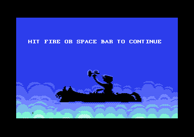
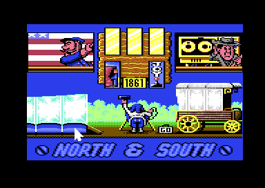
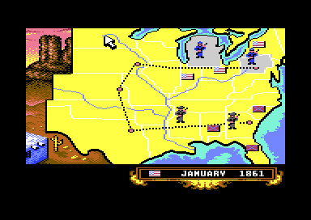
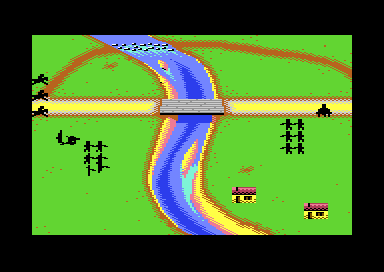
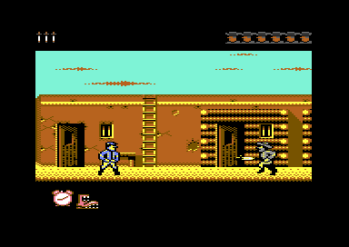
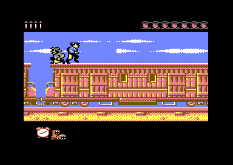

<meta charset="utf-8">
<meta name="viewport" content="width=device-width, initial-scale=1">
<title>North & South</title>
<link rel="preconnect" href="https://fonts.googleapis.com">
<link rel="stylesheet" href="https://fonts.googleapis.com/css2?family=Lato:wght@400;700;900&family=IBM+Plex+Mono:wght@400;500&display=swap">
<style>
:root{
  --bg:#23262d; --paper:#e9e7e1; --surface:#ffffff; --surface-2:#f1efea; --line:#d5d3cc; --line-soft:#e0ded8;
  --ink:#2f3136; --ink-soft:#55585f; --ink-mute:#80838a;
  --link:#1f5fa8; --link-hover:#154480; --accent:#1f5fa8;
  --amber:#c25a00; --cyan:#1f5fa8; --coral:#d04a3a; --green:#2a8a4a; --violet:#4a5bd6; --hl:#fff0c2;
  --chip:#2f3136; --chip-ink:#ffffff;
  --c64blue:#40318d; --c64grey:#686868;
  --fd:'Lato',system-ui,sans-serif; --fb:'Lato',system-ui,sans-serif; --fm:'IBM Plex Mono',ui-monospace,Menlo,monospace;
  --col:1080px; --gx:68px; --fs:17px; --lh:1.6; --hw:900; --h1:46px; --h2:26px; --sy:48px; --pp:26px; --r:10px;
  --plate-shadow:0 1px 2px rgba(0,0,0,.05),0 4px 14px rgba(0,0,0,.05);
}
*{box-sizing:border-box}
html{background:var(--bg);min-height:100%}
body{background:var(--paper);color:var(--ink);font-family:var(--fb);font-size:var(--fs);line-height:var(--lh);max-width:var(--col);margin:0 auto;min-height:100vh;padding:0 0 4rem}
h1,h2,h3{font-weight:var(--hw);letter-spacing:-.01em;text-wrap:balance;color:var(--ink);margin:0}
.wrap{padding:0 var(--gx)}
.hero{padding:48px var(--gx) 8px;text-align:left}
.eyebrow{font-family:var(--fm);font-size:12px;letter-spacing:.08em;text-transform:uppercase;color:var(--ink-mute);margin:0 0 10px}
.hero h1{font-size:var(--h1);line-height:1.15;letter-spacing:-.02em;margin:0 0 14px}
.hero .sub{margin:0 0 .6em;color:var(--ink-soft)}
section{padding:var(--sy) 0 24px}
section:last-of-type{border-bottom:none}
.fig{font-family:var(--fm);font-size:12px;letter-spacing:.08em;text-transform:uppercase;color:var(--ink-mute);margin:0 0 10px}
h2.t{font-size:var(--h2);margin-bottom:12px}
.lede{color:var(--ink-soft);margin:0 0 30px}
.plate{background:var(--surface);border:1px solid var(--line);border-radius:var(--r);padding:var(--pp);box-shadow:var(--plate-shadow)}
.cap{font-size:14px;color:var(--ink-mute);margin-top:14px;line-height:1.55}
.cap b{color:var(--ink);font-weight:700}
code{font-family:var(--fm);font-size:.82em;background:var(--chip);color:var(--chip-ink);border-radius:4px;padding:2px 6px;overflow-wrap:break-word;-webkit-box-decoration-break:clone;box-decoration-break:clone}
.ns-shots{display:grid;grid-template-columns:repeat(auto-fit,minmax(220px,1fr));gap:14px}
.ns-shots figure{margin:0}
.ns-shots img,.ns-cv{width:100%;height:auto;image-rendering:pixelated;display:block;border-radius:4px;background:#000}
.ns-shots figcaption{font-size:13px;color:var(--ink-mute);margin-top:6px}
.ns-anim{display:grid;grid-template-columns:repeat(auto-fill,minmax(120px,1fr));gap:12px;margin:14px 0 0}
.ns-anim.wide{grid-template-columns:repeat(auto-fill,minmax(170px,1fr))}
.ns-anim figure{margin:0}
.ns-anim canvas{width:100%;height:auto;image-rendering:pixelated;display:block;border-radius:4px}
.ns-anim figcaption{font-size:13px;color:var(--ink-mute);margin-top:6px;line-height:1.4}
.ns-n{font-family:var(--fm);font-size:12px;color:var(--ink-soft)}
.ns-cv.ns-small{max-width:300px}
.ns-bar{display:flex;flex-wrap:wrap;gap:8px;align-items:center;margin:0 0 14px}
.ns-bar button{font:500 13px var(--fm);padding:6px 12px;border:1px solid var(--line);background:var(--surface-2);color:var(--ink);border-radius:6px;cursor:pointer}
.ns-bar button[aria-pressed="true"]{background:var(--chip);color:var(--chip-ink);border-color:var(--chip)}
.ns-bar label{font-size:14px;color:var(--ink-soft);display:flex;gap:6px;align-items:center}
.ns-tab{width:100%;border-collapse:collapse;font-size:15px;margin:14px 0}
.ns-tab th,.ns-tab td{border-bottom:1px solid var(--line-soft);padding:6px 8px;text-align:left;vertical-align:top}
.ns-tab th{font-weight:700;color:var(--ink-soft);font-size:13px}
.ns-tab td.n{text-align:right;font-family:var(--fm);font-size:14px}
.ns-out{font-family:var(--fm);font-size:14px;background:var(--surface-2);border-radius:6px;padding:10px 12px;margin-top:12px}
.ns-range{width:100%}
@media (max-width:700px){:root{--gx:16px;--h1:34px;--pp:14px}}
</style>
<!-- tabs -->
<header class="hero">
  <p class="eyebrow">1991 · Infogrames</p>
  <h1>North & South</h1>
  <p class="sub">A board game of the American Civil War with four arcade games inside it, spread over four sides of tape. A captain is the strongest level in the arcade games and the weakest when chance decides them, and the computer general chooses each turn by one of five plans, two of which turn out to be the same.</p>
</header>
<main class="wrap">

<section data-part="">
  <p class="fig">01 · The game</p>
  <h2 class="t">A war on a map, fought out in arcade scenes</h2>
  <p class="lede">The Union and the Confederacy take turns on a map of the United States split into territories. Two people can play, or one against the computer, or the computer can play both sides.</p>
  <div class="ns-shots">
    <figure><figcaption>The title. Jeroen Tel's tune plays under the credits.</figcaption></figure>
    <figure><figcaption>The menu: each side's flag, its character's head for the level, the year, three disasters, arcade or strategic.</figcaption></figure>
    <figure><figcaption>The map in January 1861. Each army is a soldier on its territory.</figcaption></figure>
    <figure><figcaption>A battle, on the field with the river.</figcaption></figure>
    <figure><figcaption>Storming a fort.</figcaption></figure>
    <figure><figcaption>Stopping the enemy's train.</figcaption></figure>
  </div>
  <p>Each turn a side moves its armies, one territory each. An army that walks onto an enemy army starts a battle. One that walks into an enemy town has to take its fort. Cutting the railway between two enemy towns lets a side stop the enemy's supply train, which carries the gold that buys new armies. The war ends when one side has no army left.</p>
  <p>The battle, the fort and the train are arcade games, each loaded from tape when it is needed. With the arcade turned off in the menu, chance decides them instead. Every picture on this page apart from these six is drawn from the game's own bytes, from the listings behind the Source code tab: every byte of the game, with a note on what each one does.</p>
  <p>Numbers written like <code>$9000</code> are places in the C64's 64 kilobytes of memory, counted in hexadecimal (base 16, with the digits 0 to 9 and A to F). Each one links to that place in the Source code tab. A name beside it, like <code>year_setup</code>, is the name the listing gives the routine or table there.</p>
</section>

<section data-part="">
  <p class="fig">02 · Music</p>
  <h2 class="t">Music: Jeroen Tel's three tunes, played by the game's own player</h2>
  <p class="lede">The title has one tune, and the ending has two: one for the winner's screen and one for the loser's.</p>
  <div class="plate"><div id="ns-music"></div>
    <p class="cap">The buttons run the game's own music players on a simulator of the C64's processor, the 6502, and play what they write through the site's model of the C64's sound chip, the SID. They run once a frame, 50 times a second, as the game's screen interrupt (code the video chip sets off at a line of the screen) calls them: the title's player (<code>$9000</code> starts, <code>$9003</code> plays a frame, title part) and the ending's (<code>$3000</code> and <code>$3003</code>, tune 0 for the victory and 1 for the defeat, ending part). <code>test_music.js</code> checks every write to the chip, frame by frame, against the same code run over each part's whole memory.</p></div>
  <p>Each of the SID's three voices plays an order list, a list of patterns, and each pattern is a short run of notes. The ending's player is a later build of the title's. It keeps the same variables and adds three things. A glide slides from one note to the next (pattern byte <code>$FD</code>). An arpeggio, a fast run of notes that sounds like a chord, can take its base note from the order list. And a small detune from the instrument is added to every frequency (<span data-part="ending"><code>$3107</code></span>). The two ending tunes share 22 of their patterns, and the defeat's is played a semitone higher (its transpose is 1).</p>
</section>

<section data-part="map">
  <p class="fig">03 · The map</p>
  <h2 class="t">Each start year puts the armies where the war stood</h2>
  <p class="lede">The menu's calendar picks 1861, 1862, 1863 or 1864. Each year starts with its own owners for the 26 territories and its own armies.</p>
  <div class="plate">
    <div class="ns-bar" id="ns-years"></div>
    <canvas id="ns-map" class="ns-cv" width="320" height="200"></canvas>
    <table class="ns-tab" id="ns-map-tab"></table>
    <p class="cap">Drawn by the map's own code, run on the kit's 6502 over the map part's listing: the places' backgrounds (<code>$23DC</code>, <code>$23E7</code>), the year's set-up (<code>year_setup</code>, <code>$28D3</code>) and the drawing of owners and armies (<code>$3B97</code>). The month band is drawn too, as the first turn has it (<code>$39B3</code>, <code>$3B0D</code>, <code>$1E84</code>). For 1861 the result differs from the emulator's picture of the game only in the 184 pixels the cursor covers (<code>test_map.js</code>).</p>
  </div>
  <p>The year's set-up copies four tables into the war's variables: who owns each territory (<code>$0DAB</code>), whose army stands on it (<code>$0DE0</code>) and how many infantry, cavalry and cannon it has (<code>$0E2E</code>, <code>$0E14</code>, <code>$0E48</code>). The 1861 table starts at <code>$28EC</code>, 1862 at <code>$293F</code>, 1863 at <code>$29C0</code> and 1864 at <code>$2A54</code>. Every army on the map is drawn with one of two soldiers, one for each side (<code>draw_army</code>, <code>$3BE7</code>). The manual says the cannon balls at the soldier's feet show the army's size. The drawing reads only the army's side, so every army looks the same.</p>
</section>

<section data-part="map">
  <p class="fig">04 · A turn</p>
  <h2 class="t">Where an army moves decides what happens</h2>
  <p>A side's armies move one territory each, or stay. The one under the storm cloud, when the storm is on, cannot move (<code>list_armies</code>, <code>$2E20</code>). Clicking the band with the month and year ends the turn. What a move does depends only on what is in the territory it enters:</p>
  <table class="ns-tab">
    <tr><th>The territory holds</th><th>What happens</th><th>Code</th></tr>
    <tr><td>nobody, or the enemy and no army</td><td>the army takes it</td><td><code>$2BA3</code></td></tr>
    <tr><td>an enemy army</td><td>a battle</td><td><code>battle_move</code>, <code>$2DA6</code></td></tr>
    <tr><td>an enemy town and no army</td><td>the fort</td><td><code>take_town</code>, <code>$2C75</code></td></tr>
    <tr><td>an enemy town and an army</td><td>a battle, then the fort</td><td><code>$2C1A</code></td></tr>
    <tr><td>one of the side's own armies</td><td>the two join, while each total stays within 18 infantry, 9 cavalry and 3 cannon</td><td><code>join_armies</code>, <code>$2CCF</code></td></tr>
  </table>
  <p>After the moves, an enemy territory with no army and no town that the side's armies surround changes sides (<code>surround</code>, <code>$32CF</code>). Then the side's supply train runs along a railway between two of its towns, through its own territories, and brings one bag of gold for every five territories the side owns or occupies, and one more (<code>count_gold</code>, <code>$3896</code>). Five bags buy a new army of 6 infantry, 3 cavalry and a cannon, placed on the side's railway (<code>new_army</code>, <code>$38D5</code>).</p>
  <p>Each of these events plays a short scene in the panel at the map's bottom left. The panel is drawn from a table of 20 pictures, each a block of bitmap cells with its colours (<code>draw_picture</code>, <code>$1447</code>; <code>picture_table</code>, <code>$C30F</code>), and a scene draws small pictures over part of a big one, in turn.</p>
  <div class="plate">
    <div class="ns-bar" id="ns-panels"></div>
    <canvas id="ns-panel" class="ns-cv" width="128" height="80" style="max-width:384px"></canvas>
    <p class="cap" id="ns-panel-cap"></p>
  </div>
</section>

<section data-part="map">
  <p class="fig">05 · The disasters</p>
  <h2 class="t">Three disasters the menu turns on, and a Mexican asleep in the corner</h2>
  <p>The menu turns on three disasters (<span data-part="resident"><code>$0384</code>-<code>$0386</code></span>). Each has its place in the map's main loop, which goes round once a month, and each moves 6 infantry, 3 cavalry and a cannon, taking them from an army or bringing them.</p>
  <table class="ns-tab">
    <tr><th>Disaster</th><th>What sets it off</th><th>What happens</th><th>Code</th></tr>
    <tr><td>The Indians</td><td>an army of either side in territory 3 or 8, in the northwest, at the second month in a row, and every second month while one stays</td><td>ten smoke signals rise at the map's left edge and a figure waits there for a random while; then a rider comes down on the army, which loses 6 infantry, 3 cavalry and a cannon</td><td><code>indians</code>, <code>$2678</code></td></tr>
    <tr><td>The Mexican, with the Indians</td><td>an army of either side in territory 19, Texas, the same way</td><td>the Mexican asleep at the bottom left wakes, walks out and throws a bomb, and the army loses the same</td><td><code>mexican</code>, <code>$178B</code></td></tr>
    <tr><td>The storm</td><td>always, once it is on</td><td>a cloud sits over a territory, and the army under it cannot move; twice a month it moves on to a neighbouring territory picked at random</td><td><code>storm_move</code>, <code>$1602</code></td></tr>
    <tr><td>European reinforcements</td><td>every fourth month</td><td>a ship sails in to territory 18, South Virginia on the east coast, and lands 6 infantry, 3 cavalry and a cannon there when it has an army or an owner</td><td><code>reinforcements</code>, <code>$227A</code></td></tr>
  </table>
  <p>The Mexican is a sprite of 17 frames that sleeps in his sombrero while the Indians are on. When he wakes, he gets up, walks up and to the right and throws his bomb at the 17th of his 33 steps, then walks back the same way and lies down again. Only then does the army lose its men. The bomb is not aimed: it flies 72 pixels to the right and a little up, 18 frames from where he stands, which lands it on Texas, the place of territory 19.</p>
  <div class="plate">
    <canvas id="ns-mex" class="ns-cv" width="128" height="48" style="max-width:512px"></canvas>
    <p class="cap" id="ns-mex-cap"></p>
  </div>
  <p>The map has other figures of its own, all sprites over the bitmap (<code>$65C0</code>): the supply train on the railway, the soldier who marches an army from territory to territory, the bags of gold, the ship and its sails, the cloud and its lightning, the Indians' smoke, figure and rider, the interception's figures and the waving flag in the panel.</p>
</section>

<section data-part="map">
  <p class="fig">06 · The computer</p>
  <h2 class="t">The computer general picks one of five plans each turn</h2>
  <p class="lede">Before it moves, the computer sets a plan number from four questions (<code>ai_plan</code>, <code>$3C98</code>). The plan changes how much each territory is worth to its armies.</p>
  <div class="plate">
    <div class="ns-bar" style="flex-direction:column;align-items:flex-start">
      <label><input type="checkbox" id="ns-p-rail" checked> It has a railway between two of its towns</label>
      <label><input type="checkbox" id="ns-p-train"> The enemy's train ran last turn</label>
      <label><input type="checkbox" id="ns-p-reinf"> The European reinforcements are on, and South Virginia is not the computer's</label>
      <label>Its armies <input type="number" id="ns-p-own" value="5" min="0" max="26" style="width:4em"> the enemy's <input type="number" id="ns-p-enemy" value="6" min="0" max="26" style="width:4em"></label>
    </div>
    <div class="ns-out" id="ns-plan-out"></div>
    <p class="cap">The questions in the order <code>ai_plan</code> asks them; the first that answers yes decides. What each plan then changes is in <code>ai_plan_scores</code> (<code>$3D09</code>) and <code>ai_occupied</code> (<code>$3DE4</code>).</p>
  </div>
  <p>Every territory starts from a fixed score (<code>$BF28</code>). An empty territory that is not the computer's gains 5, and one with an enemy army loses twice that army's strength plus 2 (<code>ai_occupied</code>). Each army then values the territories by distance: whole at one step, three quarters at two, half at three, and nothing farther (<code>ai_distance</code>, <code>$3E33</code>). Below level 2 every score of 4 or more is moved up or down at random (<code>ai_noise</code>, <code>$3ECA</code>). The army steps toward the highest score (<code>ai_step</code>, <code>$3F34</code>).</p>
  <p>Plan 2 is chosen when the European reinforcements are on and South Virginia, where their ship lands, is not the computer's. The code that applies a plan has steps for plans 0, 1 and 3 only, so under plan 2 the computer plays exactly as under plan 4 (<a href="discoveries.html">Discoveries</a>).</p>
</section>

<section data-part="">
  <p class="fig">07 · The levels</p>
  <h2 class="t">The levels count one way in the arcade and the other way in strategic mode</h2>
  <p class="lede">Clicking a character's head on the menu steps that side's level: corporal, sergeant, captain (<span data-part="menu"><code>$1193</code></span>, kept in <span data-part="resident"><code>$0380</code></span> and <span data-part="resident"><code>$0381</code></span>). Each part of the game reads the level for itself, and they do not agree on which end is strong.</p>
  <p>Where the table says "a random number from <code>$7F</code>", the game draws a number from 0 to 255 and the thing happens when it comes out at <code>$7F</code> (127) or more.</p>
  <table class="ns-tab">
    <tr><th>What the level changes</th><th>Corporal (0)</th><th>Sergeant (1)</th><th>Captain (2)</th><th>Code</th></tr>
    <tr><td>a computer side's chance to act in a battle, each pass</td><td class="n">12 in 256</td><td class="n">25 in 256</td><td class="n">always</td><td><span data-part="battle"><code>$9D14</code></span></td></tr>
    <tr><td>the defender's fort: the view starts at tile column</td><td class="n">200</td><td class="n">80</td><td class="n">4</td><td><span data-part="fort"><code>$89B7</code></span></td></tr>
    <tr><td>the defender's fort: guards</td><td class="n">8</td><td class="n">10</td><td class="n">12</td><td><span data-part="fort"><code>$89B7</code></span></td></tr>
    <tr><td>the defender's fort: the dog's chance to run, every 150 frames</td><td class="n">15 in 256</td><td class="n">20 in 256</td><td class="n">30 in 256</td><td><span data-part="fort"><code>$92EF</code></span></td></tr>
    <tr><td>the defender's train: the view starts at column</td><td class="n">80</td><td class="n">60</td><td class="n">40</td><td><span data-part="train"><code>$8B50</code></span></td></tr>
    <tr><td>the defender's train: guards</td><td class="n">8</td><td class="n">10</td><td class="n">12</td><td><span data-part="train"><code>$8B50</code></span></td></tr>
    <tr><td>the computer's scores on the map get random noise</td><td>up to an eighth</td><td>up to a half</td><td>none</td><td><span data-part="map"><code>$3EE4</code></span></td></tr>
    <tr><td>strategic mode: the defender loses a fort or a train with a random number from</td><td class="n">$7F (50 %)</td><td class="n">$55 (67 %)</td><td class="n">$3F (75 %)</td><td><span data-part="map"><code>$2DBB</code></span></td></tr>
    <tr><td>strategic mode: in each round of a battle, the side this side fires at loses a unit of each kind with a random number from</td><td class="n">$3F (75 %)</td><td class="n">$55 (67 %)</td><td class="n">$7F (50 %)</td><td><span data-part="map"><code>$32B0</code></span></td></tr>
  </table>
  <p>In the battle, the fort, the train and the computer's thinking on the map, a captain is the strongest. A computer captain acts on every pass of a battle and moves on the map without noise, and a captain defending makes the attacker run the longest fort: the end is tile column 379 at every level, 375 columns from a captain's start and 179 from a corporal's. The strategic odds run the other way. A captain's fort falls three times in four, and a corporal's fire takes a unit three times in four. So with the arcade turned off, a side does best as a corporal. The manual calls the corporal the hardest level. The ending uses the level once more, as the player's rank in its message.</p>
</section>

<section data-part="battle">
  <p class="fig">08 · The battle</p>
  <h2 class="t">Each battle is fought on one of three fields, picked at random</h2>
  <p class="lede">A random number from 0 to 255 picks the field (<code>field_unpack</code>, <code>$90A5</code>): the canyon with a wooden bridge or the river with a stone bridge, 85 chances in 256 each, or the open field, 86 in 256.</p>
  <div class="plate">
    <div class="ns-bar"><span id="ns-fields"></span><label><input type="checkbox" id="ns-hz"> Show where soldiers fall in</label></div>
    <canvas id="ns-field" class="ns-cv" width="320" height="200"></canvas>
    <p class="cap">Each field unpacked from the battle file by the page's port of the game's unpacker (<code>unpack</code>, <code>$8E1E</code>): the bitmap from <code>$826E</code>'s pointers, the screen from <code>$8274</code>'s and the colours from <code>$827A</code>'s, or green everywhere on the open field. <code>test_fields.js</code> checks the port against the game's own <code>$90C5</code> on all three. The overlay marks, for each character row, the four columns where an object's position counts as in the river or the canyon (<code>hazards</code>, <code>$A113</code>; the river's table <code>$8752</code>, the canyon's <code>$876C</code>). The houses and trees the game adds at the edges are not drawn here.</p>
  </div>
  <p>Twenty objects fight: six soldiers, three riders and a cannon for each side. The field is a bitmap, a picture held in memory that the video chip shows, and the objects are cut into it as black shapes. The background under each is kept and put back before the next draw (<code>save_under</code>, <code>$9247</code>; <code>restore_under</code>, <code>$92BF</code>). Only the shots are sprites, the small pictures the video chip lays over the screen by itself. A cannonball that lands on a bridge row three times breaks the bridge, and its rows become river or canyon too (<code>ball_crater</code>, <code>$A6A5</code>; <code>bridge_break</code>, <code>$A794</code>).</p>
  <p>On the canyon the table's bottom five rows hold <code>$FF</code>, the value the bridge rows have. Nothing falls in there, though the picture shows the canyon running to the bottom edge.</p>
</section>

<section data-part="battle">
  <p class="fig">09 · The units</p>
  <h2 class="t">The three kinds of unit</h2>
  <p>A player picks which of the three units the stick moves (RUN/STOP for the Union, F5 for the Confederacy).</p>
  <ul>
    <li><b>Infantry</b> walk in any direction. In a pair of soldiers the first one standing fires, so a full line of six fires three bullets. Across the field the game counts in pixel pairs, since its pixels are two wide. A bullet flies 3 pixel pairs a frame for 15 frames and hits an enemy within 8 pixel pairs across and 4 lines up or down (<code>infantry_fire</code>, <code>$A384</code>; <code>bullet_hits</code>, <code>$A18F</code>).</li>
    <li><b>Cavalry</b> charge on fire. A rider who charges off the far edge comes back from his own side (<code>$A462</code>, <code>$A495</code>). Pulling back turns the line of riders into a file over eight steps (<code>cavalry_turn</code>, <code>$A0AA</code>).</li>
    <li><b>Cannon</b> move only up and down. Holding fire raises the range on a gauge, one step every four frames up to 31, and the ball lands where the slider below says (<code>cannon_fire</code>, <code>$A567</code>). Every standing object within 9 pixel pairs and 8 lines of it falls, of either side (<code>balls_land</code>, <code>$A5D3</code>). After nine shots the cannon leaves the field and the next comes on.</li>
  </ul>
  <div class="plate">
    <label class="cap" for="ns-gauge">The range on the gauge: <b id="ns-gauge-v"></b></label>
    <input type="range" id="ns-gauge" class="ns-range" min="0" max="31" value="10">
    <canvas id="ns-shot" class="ns-cv" width="320" height="40"></canvas>
    <p class="cap">The ball flies (range + 2) × 2 frames at 2 pixel pairs a frame, so it lands (range + 2) × 8 pixels from where it starts: 16 pixels at range 0 and 264 at 31, across a field 320 pixels wide. Held for the full 124 frames, the gauge reaches 31.</p>
  </div>
  <p>Every unit is one of 78 pictures of 24 by 21 pixels, in the layout of a sprite (<code>shapes</code>, <code>$6400</code>), which the battle draws into the field's bitmap in black. The Confederacy's are the Union's facing the other way. Which picture a unit shows comes from a table for each side and each kind of unit:</p>
  <div class="plate">
    <div class="ns-bar"><span id="ns-ukind"></span><span id="ns-uside"></span></div>
    <div class="ns-anim" id="ns-units"></div>
    <p class="cap" id="ns-units-cap"></p>
  </div>
</section>

<section data-part="fort">
  <p class="fig">10 · The fort and the train</p>
  <h2 class="t">The train is the fort's engine on a moving floor</h2>
  <p>To take a town, the attacker runs through its fort to the flag at the far end before the clock runs out: about 76 seconds, 3,780 frames (<code>fort_clock</code>, <code>$8945</code>). Guards come one at a time, a dog runs out now and then, and barrels roll in. Fire next to a guard swings the sabre; farther away it throws a knife, four in all (<code>fighter_strike</code>, <code>$957F</code>; <code>fighter_throw</code>, <code>$95D3</code>). A knife passes over a fighter who ducks (<code>knife_hits</code>, <code>$9A63</code>).</p>
  <p>The train's file holds the same code, rebuilt at other addresses: the fighters, their poses, the knives and the guards. It takes away the walls, the dog and the barrels, and adds scenery in three bands that scroll at different speeds, wheels that turn and a driver in the cab. The attacker has 43 seconds (<span data-part="train"><code>train_clock</code>, <code>$8ADE</code></span>) to reach the locomotive. A fighter who climbs down to the ground is left behind as the train pulls away, and is beaten 30 columns later unless he climbs back on (<span data-part="train"><code>left_behind</code>, <code>$8D4D</code></span>).</p>
  <p>Both are maps of tiles. A tile is 2 by 2 characters, and a character is a block of 8 by 8 pixels drawn from a set of shapes in memory: the fort nine rows of 400 tiles (<code>fort_map</code>, <code>$2718</code>), the train six rows of 240 (<span data-part="train"><code>train_map</code>, <code>$2610</code></span>). The <a href="levels.html">Maps / levels</a> tab draws both whole.</p>
  <p>A fighter is two sprites, one above the other, or side by side when he is down. <code>fighter_pictures</code> (<code>$8CA0</code>) picks the pair for his state and the offsets between them, and the Confederacy's are the Union's, 60 pointers on. The viewer below runs that routine of the game on the kit's 6502, once a frame, over the fort's memory.</p>
  <div class="plate">
    <div class="ns-bar" id="ns-poses"></div>
    <div class="ns-bar"><span id="ns-fside"></span><span id="ns-fface"></span></div>
    <canvas id="ns-fighter" class="ns-cv ns-small" width="96" height="110"></canvas>
    <p class="cap" id="ns-fighter-cap"></p>
    <p class="cap">The attacker stays at x <code>$64</code> while the fort scrolls under him, so a walk or a jump moves only his legs and his height here. The guard is the same fighter in the other side's colours.</p>
    <div class="ns-anim wide" id="ns-fort-sprites"></div>
  </div>
</section>

<section data-part="map">
  <p class="fig">11 · Sound</p>
  <h2 class="t">Sound: 31 effects from one player</h2>
  <p class="lede">The menu loads a sound player that stays in memory for the rest of the game. The map, the battle, the fort and the train all start their sounds through it by number.</p>
  <div class="plate"><div id="ns-sfx"></div>
    <p class="cap">The game's own sound player, run on the kit's 6502 from the map part's listing: <code>$F128</code> sets it up, <code>$F12B</code> starts sound A, <code>$F12E</code> plays a frame. Each button is named for where the game asks for that number. Five numbers, 9, 10, 14, 21 and 25, are asked for nowhere, and a few sounds go on until something else stops them. <code>test_music.js</code> checks these against the player as well.</p></div>
  <p>The battle, the fort and the train load over the map but stop short of <code>$F128</code>, so the player is still there when they run. The menu has its own copy of the player with a table of 16 sounds (<span data-part="menu"><code>$FC0E</code></span>), and its sound numbers mean other sounds.</p>
</section>

<section data-part="ending">
  <p class="fig">12 · The ending</p>
  <h2 class="t">The ending names a rank and counts the months</h2>
  <p>When one side has no army left, the map loads the ending. It shows the winner's screen with the victory tune, the loser's with the defeat, or both when two people played (<code>ending_main</code>, <code>$8000</code>). A message scrolls along a text row above the picture. It names the player's rank, CORPORAL, SERGEANT or CAPTAIN, from the level picked on the menu (<code>rank_words</code>, <code>$86C0</code>), and puts the number of months the war lasted over its XX (<span data-part="resident"><code>$0399</code></span>, <span data-part="resident"><code>$039A</code></span>). There are four messages, one for each side winning and losing (<code>$847B</code>-<code>$86BF</code>).</p>
  <p>There are two pictures: the victory, a soldier in blue home with his family, and the defeat, a fallen soldier, a horse and a wrecked cannon, the same for either side (<code>defeat_screen</code>, <code>$80BF</code>). The message row is text in the title's font, set by the raster interrupt at line <code>$0A</code>, and the picture a multicolour bitmap from line <code>$50</code> (<code>$8380</code>, <code>$83CF</code>).</p>
  <div class="plate">
    <div class="ns-bar" id="ns-end-who"></div>
    <div class="ns-bar"><span id="ns-end-rank"></span><label>Months <input type="range" id="ns-end-months" min="1" max="99" value="14"> <b id="ns-end-mv">14</b></label></div>
    <canvas id="ns-end" class="ns-cv" width="320" height="200"></canvas>
    <p class="cap" id="ns-end-text"></p>
  </div>
</section>

<section data-part="resident">
  <p class="fig">13 · The tapes</p>
  <h2 class="t">Fourteen files on four sides of tape</h2>
  <p>A short program stays in memory from the boot to the end (<code>script</code>, <code>$0806</code>). It loads every file by number through one routine (<code>load_file</code>, <code>$0803</code>) with Cyberload, a fast loader that reads the tape with routines of its own in place of the C64's slow built-in ones, and asks for the right side first: "REWIND TAPE 1 SIDE 2, HIT FIRE THEN PLAY" (<code>rewind_prompt</code>, <code>$092E</code>).</p>
  <table class="ns-tab">
    <tr><th>Tape, side</th><th>Files</th><th>What they are</th></tr>
    <tr><td>1, 1</td><td>TP, OC, OM, T1-T4</td><td>the title; the menu and the sound player; the four start years' texts</td></tr>
    <tr><td>1, 2</td><td>M2, M1, M3, CS</td><td>the map; the ending</td></tr>
    <tr><td>2, 1</td><td>BS</td><td>the battle</td></tr>
    <tr><td>2, 2</td><td>S1, S2</td><td>the fort, the train</td></tr>
  </table>
  <p>The menu's settings, the armies sent to a battle and its result all pass between the files through 30 bytes of memory that every load leaves alone (<code>$037E</code>-<code>$039B</code>). After a battle, a fort or a train the map loads its file M2 again, which the arcade game wrote over, and sets itself up from those bytes (<span data-part="map"><code>$0CB1</code></span>).</p>
</section>

</main>
<footer style="margin:16px 0 0;padding:22px var(--gx) 0;border-top:1px solid #e0ded8;font-family:'IBM Plex Mono',ui-monospace,Menlo,monospace;font-size:12px;color:#80838a"><a href="https://github.com/gamesexplained/gamesexplained" style="color:#1f5fa8;text-decoration:none">GitHub</a> · <a href="https://discord.gg/3V9GWyRDWV" style="color:#1f5fa8;text-decoration:none">Discord</a><br>© Games Explained contributors. Write-ups, facts and symbol maps are available under <a href="https://creativecommons.org/licenses/by-sa/4.0/" style="color:#1f5fa8;text-decoration:none">CC BY-SA 4.0</a>; code under <a href="https://opensource.org/licenses/MIT" style="color:#1f5fa8;text-decoration:none">MIT</a></footer>
<script src="../../lib/c64.js"></script>
<script src="../../lib/sid.js"></script>
<script src="../../lib/cpu6502.js"></script>
<script>
/* ns-music */
// createDriver for C64Sid: runs the game's own players on the kit's 6502 (C64Cpu, which sid.js
// passes in), their code and tables taken from the parts' listings over NS_DRIVER_RANGES. Each
// button names its player (src), the routine that starts it (init, with A = a), the routine the
// game's raster interrupt calls once a frame (play) and the bytes that are non-zero while it plays
// (on). The effects player is set up first ($F128, as the map does when it loads) and then asked
// for sound a ($F12B). The writes the start makes go out with the first frame. stop() puts the
// volume at 0, where the title's fade ends.
const NS_DRIVER_RANGES = {
  title: [[0x00F0, 0x00FF], [0x3E97, 0x3EA1], [0x8197, 0x81A1], [0x9000, 0x9FF9]],
  ending: [[0x00F0, 0x00FF], [0x3000, 0x3BE8]],
  effects: [[0x00F0, 0x0101], [0xF128, 0xFFF9]],
};
const NS_TUNES = [
  { name: 'Title', src: 'title', init: 0x9000, play: 0x9003, a: 0, on: [0x9016] },
  { name: 'Victory', src: 'ending', init: 0x3000, play: 0x3003, a: 0, on: [0x3017] },
  { name: 'Defeat', src: 'ending', init: 0x3000, play: 0x3003, a: 1, on: [0x3017] },
];
const NS_EFFECTS = [
  'A fort or train taken', "The map's battle panel", 'Cavalry moves off', 'The cavalry charge', 'A cannon fires',
  'A unit chosen', 'Rifles fire', 'The dog bites', 'The bomb lands', 'Unused 9', 'Unused 10',
  'A bag of gold counted', 'The supply arrives', 'A hit', 'Unused 14', 'A ball lands', 'The fort panel',
  'An interception, the ship', 'The Mexican throws his bomb', 'An army lost', 'A knife thrown', 'Unused 21',
  "The reinforcements' ship", 'The supply train', 'An army moves', 'Unused 25', 'Time is up',
  'An army reinforced', 'A knife hits', 'A bark', 'A sabre stroke',
].map((name, n) => ({ name: n + ' · ' + name, src: 'effects', reset: 0xF128, init: 0xF12B, play: 0xF12E, a: n, on: [0xF13B, 0xF13C, 0xF13D] }));
function createDriver(D, C64Cpu) {
  const bases = {};
  for (const k in D.mem) { const b = new Uint8Array(0x10000); for (const [ad, bytes] of D.mem[k]) b.set(bytes, ad); bases[k] = b; }
  const sid = new Uint8Array(25);
  let m = null, cpu = null, c = null, writes = [], first = [], stopped = true;
  const io = {                                                  // the chips at $D000-$DFFF
    read(ad) { throw new Error('read $' + ad.toString(16)); },
    write(ad, val) {
      if (ad >= 0xD400 && ad < 0xD800) { const r = ad & 0x1F; if (r < 25) { sid[r] = val; writes.push(r, val); } return; }
      throw new Error('write $' + ad.toString(16));
    },
  };
  const run = (ad, a) => cpu.call(ad, { a: a || 0, x: 0, y: 0 }, { maxSteps: 200000 });
  return {
    sid,
    get writes() { return writes; },
    init(t) {
      c = D.tunes[t]; m = bases[c.src].slice(); cpu = new C64Cpu.CPU(m, { port: 0x35, io });
      sid.fill(0); writes = []; stopped = false;
      if (c.reset !== undefined) run(c.reset);
      run(c.init, c.a);
      first = writes; writes = [];
    },
    stop() { writes = [24, 0]; sid[24] = 0; stopped = true; },
    play() {
      writes = first; first = [];
      if (!stopped) run(c.play);
    },
    playing() { return !stopped && c.on.some((ad) => m[ad] !== 0); },
  };
}
// end of ns-music
</script>
<script>
/* ns-map */
// nsYearMap(ram, year, C64Cpu): the map's own code run on the kit's 6502 over a copy of the map
// part's memory, as the map sets up a new game: the start year in resident $0389, the places'
// backgrounds ($23DC, $23E7, as at $0C00), the year's owners and armies (year_setup, $28D3), and
// draw_changes ($3B97) with every territory's last drawn owner and army ($0DC6, $0DFA) set to $FF,
// as map_restore does, so that it draws them all; then the month band as the first turn has it:
// draw_month ($39B3) for January, draw_year ($3B0D), and the Union's flag ($1E84 with 26, the band's
// place, whose owner is the side to play, $0DC5). Colour RAM starts as the file's colours at
// $8000; the code's writes to $D800-$DBFF land there. Returns the memory and the colour RAM.
function nsYearMap(ram, year, C64Cpu) {
  const m = ram.slice(), col = new Uint8Array(1024);
  for (let i = 0; i < 1000; i++) col[i] = m[0x8000 + i];
  const io = {
    read(a) { if (a >= 0xD800 && a < 0xDC00) return col[a - 0xD800] | 0xF0; throw new Error('read $' + a.toString(16)); },
    write(a, v) { if (a >= 0xD800 && a < 0xDC00) { col[a - 0xD800] = v & 15; return; } throw new Error('write $' + a.toString(16)); },
  };
  const cpu = new C64Cpu.CPU(m, { port: 0x35, io });
  const call = (ad, x) => cpu.call(ad, { a: 0, x: x || 0, y: 0 }, { maxSteps: 5000000 });
  m[0x0389] = year;
  call(0x23DC); call(0x23E7);
  call(0x28D3);
  m.fill(0xFF, 0x0DC6, 0x0DC6 + 26); m.fill(0xFF, 0x0DFA, 0x0DFA + 26);
  call(0x3B97);
  m[0x0D2D] = 0; call(0x39B3); call(0x3B0D);                     // January and the year on the band
  m[0x0DC5] = 0; m[0x0E86] = 0; call(0x1E84, 26);              // the Union to play: its flag on the band, as conf_turn ($2AE6) does for its side
  return { m, col };
}
// end of ns-map
</script>
<script>
/* ns-field */
// nsUnpack(ram, src, count): the battle's unpacker (unpack, $8E1E) ported. A control byte gives
// eight flags, high bit first: 1, the next byte is a literal, written once and kept as the last;
// 0, the next byte is a count, and the last literal is written that many times (256 for a count
// of 0, though the output moves on by the count). It stops when the bytes still to come, count
// at the start, go below 0, so it writes at least count + 1 bytes.
function nsUnpack(ram, src, count) {
  const out = new Uint8Array(count + 512);
  let s = src, d = 0, n = count, last = 0;
  for (;;) {
    let ctl = ram[s]; s = (s + 1) & 0xFFFF;
    for (let k = 0; k < 8; k++) {
      const lit = ctl & 0x80; ctl = (ctl << 1) & 0xFF;
      if (lit) { last = ram[s]; out[d++] = last; n--; }
      else { const c = ram[s]; out.fill(last, d, d + (c || 256)); d += c; n -= c; }
      if (n < 0) return out;
      s = (s + 1) & 0xFFFF;
    }
  }
}
// nsField(ram, t): field t (0 open, 1 canyon, 2 river) as field_unpack ($90C5) unpacks it: the
// bitmap ($1F40 bytes to come, from $826E's pointer), the screen ($3E8, $8274) and the colours
// ($3E8, $827A), or colour 5 everywhere for the open field ($912B).
function nsField(ram, t) {
  const w = (a) => ram[a] | ram[a + 1] << 8;
  return {
    bitmap: nsUnpack(ram, w(0x826E + 2 * t), 0x1F40).subarray(0, 8000),
    screen: nsUnpack(ram, w(0x8274 + 2 * t), 0x3E8).subarray(0, 1000),
    colour: t ? nsUnpack(ram, w(0x827A + 2 * t), 0x3E8).subarray(0, 1000) : new Uint8Array(1000).fill(5),
  };
}
// end of ns-field
</script>
<script>
const $ = (id) => document.getElementById(id);
const hex = (v, n = 4) => '$' + v.toString(16).toUpperCase().padStart(n, '0');
const RGB = (typeof C64 !== 'undefined' ? C64.PAL : ['#000000']).map((h) => [1, 3, 5].map((i) => parseInt(h.substr(i, 2), 16)));
function missing(el, what) { el.insertAdjacentHTML('beforeend', '<p class="cap">' + what + ' needs the site\'s shared scripts, which this copy of the page could not load. Open it from the built site.</p>'); }
// a multicolour bitmap: 8,000 bitmap bytes, 1,000 screen bytes (colours 1 and 2), 1,000 colour RAM
// bytes (colour 3) and the background (colour 0)
function drawBitmap(cv, bitmap, screen, colour, bg) {
  const ctx = cv.getContext('2d'), img = ctx.createImageData(320, 200), d = img.data;
  for (let c = 0; c < 1000; c++) {
    const cy = (c / 40) | 0, cx = c % 40, s = screen[c], cl = [bg, s >> 4, s & 15, colour[c] & 15];
    for (let r = 0; r < 8; r++) {
      const b = bitmap[c * 8 + r];
      for (let k = 0; k < 4; k++) {
        const rgb = RGB[cl[(b >> (6 - 2 * k)) & 3]];
        for (let h = 0; h < 2; h++) { const o = ((cy * 8 + r) * 320 + cx * 8 + 2 * k + h) * 4; d[o] = rgb[0]; d[o + 1] = rgb[1]; d[o + 2] = rgb[2]; d[o + 3] = 255; }
      }
    }
  }
  ctx.putImageData(img, 0, 0);
}
function buttons(el, names, pick) {
  el.innerHTML = names.map((n, i) => `<button type="button" data-i="${i}">${n}</button>`).join('');
  const bs = [...el.querySelectorAll('button')];
  const press = (i) => { bs.forEach((b, j) => b.setAttribute('aria-pressed', String(i === j))); pick(i); };
  bs.forEach((b, i) => b.addEventListener('click', () => press(i)));
  return press;
}
const ranges = (ram, list) => list.map(([a, b]) => [a, ram.slice(a, b + 1)]);

// ---- 02 and 10 the music and the effects
if (typeof C64 === 'undefined' || typeof C64Sid === 'undefined' || typeof C64Cpu === 'undefined') { missing($('ns-music'), 'The tune player'); missing($('ns-sfx'), 'The sound player'); }
else Promise.all(['parts/title/listing.json', 'parts/ending/listing.json', 'parts/map/listing.json'].map((u) => C64.load(u))).then(([ti, en, mp]) => {
  const mem = { title: ranges(ti.ram, NS_DRIVER_RANGES.title), ending: ranges(en.ram, NS_DRIVER_RANGES.ending), effects: ranges(mp.ram, NS_DRIVER_RANGES.effects) };
  C64Sid.mount($('ns-music'), { driver: createDriver, data: { mem, tunes: NS_TUNES }, tunes: NS_TUNES.map((c) => c.name) });
  C64Sid.mount($('ns-sfx'), { driver: createDriver, data: { mem, tunes: NS_EFFECTS }, tunes: NS_EFFECTS.map((c) => c.name), bounce: false });
});

// ---- 03 the map by year
const SIDES = ['Union', 'Confederacy'];
if (typeof C64 === 'undefined' || typeof C64Cpu === 'undefined') missing($('ns-map').parentNode, 'The map');
else C64.load('parts/map/listing.json').then((L) => {
  const cache = [];
  buttons($('ns-years'), ['1861', '1862', '1863', '1864'], (y) => {
    const r = cache[y] || (cache[y] = nsYearMap(L.ram, y, C64Cpu)), m = r.m;
    drawBitmap($('ns-map'), m.subarray(0x4000, 0x4000 + 8000), m.subarray(0x6000, 0x6000 + 1000), r.col, 0);
    const row = (s) => {
      let own = 0, armies = 0, inf = 0, cav = 0, can = 0;
      for (let t = 0; t < 26; t++) {
        if (m[0x0DAB + t] === s) own++;
        if (m[0x0DE0 + t] === s) { armies++; inf += m[0x0E2E + t]; cav += m[0x0E14 + t]; can += m[0x0E48 + t]; }
      }
      return `<tr><td>${SIDES[s]}</td><td class="n">${own}</td><td class="n">${armies}</td><td class="n">${inf}</td><td class="n">${cav}</td><td class="n">${can}</td></tr>`;
    };
    $('ns-map-tab').innerHTML = '<tr><th></th><th>Territories</th><th>Armies</th><th>Infantry</th><th>Cavalry</th><th>Cannon</th></tr>' + row(0) + row(1);
  })(0);
});

// ---- 05 the computer's plan
const PLANS = [
  'Plan 0: no railway. Each army\'s scores for one of four lists of territories, chosen by the territory it stands on, are multiplied by 4 ($BF42, $BF5C).',
  'Plan 1: the enemy\'s train ran. The scores of the railway territories the enemy holds are tripled, to cut the line.',
  'Plan 2: South Virginia. The scores stay as they are: the computer plays as under plan 4.',
  'Plan 3: as many armies as the enemy, or more. Each enemy army\'s territory scores 4, 3 or 2 times as much, the weaker the army the more, and an enemy army no longer lowers its territory\'s score.',
  'Plan 4: fewer armies than the enemy. The scores stay as they are.',
];
function plan() {
  let p;
  if (!$('ns-p-rail').checked) p = 0;
  else if ($('ns-p-train').checked) p = 1;
  else if ($('ns-p-reinf').checked) p = 2;
  else p = +$('ns-p-own').value >= +$('ns-p-enemy').value ? 3 : 4;
  $('ns-plan-out').textContent = PLANS[p];
}
['ns-p-rail', 'ns-p-train', 'ns-p-reinf', 'ns-p-own', 'ns-p-enemy'].forEach((id) => $(id).addEventListener('input', plan));
plan();

// ---- 07 the battlefields
if (typeof C64 === 'undefined') missing($('ns-field').parentNode, 'The battlefields');
else C64.load('parts/battle/listing.json').then((L) => {
  let t = 0;
  const show = () => {
    const f = nsField(L.ram, t), cv = $('ns-field');
    drawBitmap(cv, f.bitmap, f.screen, f.colour, 0);
    if (!$('ns-hz').checked || t === 0) return;
    const ctx = cv.getContext('2d'), tab = t === 1 ? 0x876C : 0x8752;
    ctx.fillStyle = 'rgba(255,60,40,.55)';
    for (let r = 0; r < 25; r++) { const c = L.ram[tab + r]; if (c < 0x80) ctx.fillRect(c * 8, r * 8, 32, 8); }
  };
  buttons($('ns-fields'), ['Open field', 'Canyon', 'River'], (i) => { t = i; show(); })(0);
  $('ns-hz').addEventListener('change', show);
});

// ---- 08 the cannon's range
function gauge() {
  const r = +$('ns-gauge').value, cv = $('ns-shot'), ctx = cv.getContext('2d'), x = (r + 2) * 8;
  $('ns-gauge-v').textContent = `${r}: ${(r + 2) * 2} frames, ${x} pixels`;
  ctx.fillStyle = '#56ac4d'; ctx.fillRect(0, 0, 320, 40);
  ctx.strokeStyle = '#000'; ctx.lineWidth = 2; ctx.beginPath();
  for (let i = 0; i <= 40; i++) { const px = 4 + x * i / 40, py = 30 - 22 * Math.sin(Math.PI * i / 40); i ? ctx.lineTo(px, py) : ctx.moveTo(px, py); }
  ctx.stroke();
  ctx.fillStyle = 'rgba(0,0,0,.35)'; ctx.fillRect(4 + x - 18, 22, 36, 16);
  ctx.fillStyle = '#000'; ctx.fillRect(0, 26, 8, 8); ctx.beginPath(); ctx.arc(4 + x, 30, 3, 0, 7); ctx.fill();
}
$('ns-gauge').addEventListener('input', gauge); gauge();
</script>
<script>
// ---- 04, 08 and 09 the pictures, played at the game's pace: one step every 20 ms, the PAL frame
const NS_ANIMS = [];
(function () {
  let last = 0, acc = 0;
  const loop = (t) => {
    if (last) acc += Math.min(t - last, 200);
    last = t;
    for (; acc >= 20; acc -= 20) for (const a of NS_ANIMS) a();
    requestAnimationFrame(loop);
  };
  requestAnimationFrame(loop);
})();
function nsFill(img, c) {
  const rgb = RGB[c], d = img.data;
  for (let o = 0; o < d.length; o += 4) { d[o] = rgb[0]; d[o + 1] = rgb[1]; d[o + 2] = rgb[2]; d[o + 3] = 255; }
}
// one multicolour sprite image of 64 bytes at a, its top left at (ox, oy): pixel pairs %01, %10 and
// %11 in the colours cols[0], cols[1] and cols[2]
function nsSprite(img, ram, a, ox, oy, cols) {
  const d = img.data, W = img.width, H = img.height;
  for (let y = 0; y < 21; y++) for (let x = 0; x < 24; x++) {
    const p = (ram[a + y * 3 + (x >> 3)] >> (6 - 2 * ((x & 7) >> 1))) & 3, px = ox + x, py = oy + y;
    if (!p || px < 0 || py < 0 || px >= W || py >= H) continue;
    const rgb = RGB[cols[p - 1]], o = (py * W + px) * 4;
    d[o] = rgb[0]; d[o + 1] = rgb[1]; d[o + 2] = rgb[2]; d[o + 3] = 255;
  }
}
// a grid of small canvases, each playing a list of steps: { name, steps, every (frames), from (the
// step it goes back to at the end), draw(img, step) }
function nsAnimGrid(el, w, h, list) {
  el.innerHTML = '';
  const cells = list.map((o) => {
    const f = document.createElement('figure'), cv = document.createElement('canvas');
    cv.width = w; cv.height = h;
    f.append(cv); f.insertAdjacentHTML('beforeend', '<figcaption>' + o.name + '</figcaption>'); el.append(f);
    return { o, ctx: cv.getContext('2d'), img: cv.getContext('2d').createImageData(w, h), i: 0, t: 0 };
  });
  const draw = (c) => { c.o.draw(c.img, c.o.steps[c.i]); c.ctx.putImageData(c.img, 0, 0); };
  cells.forEach(draw);
  return () => {
    if (!el.isConnected) return;
    for (const c of cells) {
      if (c.o.steps.length < 2 || ++c.t < c.o.every) continue;
      c.t = 0; c.i++;
      if (c.i >= c.o.steps.length) c.i = c.o.from || 0;
      draw(c);
    }
  };
}

// ---- 08 the units' pictures, from the battle's own tables
if (typeof C64 === 'undefined') missing($('ns-units'), 'The pictures');
else C64.load('parts/battle/listing.json').then((L) => {
  const m = L.ram, at = (n) => m[0x82E5 + n] | m[0x8297 + n] << 8;   // shape_lo, shape_hi
  const p = (a, i) => m[a + i];
  // the pictures each routine picks, by the side y: infantry_pictures ($9519) and cavalry_pictures
  // ($95A0) from the tables at $8640-$8672, cannon_pictures ($966E) from $8682-$868A
  const KINDS = (y) => [
    [{ name: 'Standing', steps: [p(0x8640, y)] },
     { name: 'Walking', steps: [p(0x8642, y), p(0x8642, y) + 1], every: 10 },
     { name: 'Firing, the first of a pair', steps: [p(0x8654, 6 * y), p(0x8660, 6 * y)], every: 10 },
     { name: 'Firing, the second', steps: [p(0x8654, 6 * y + 1), p(0x8660, 6 * y + 1)], every: 10 },
     { name: 'Hit', steps: [p(0x8644, y), p(0x8644, y) + 1, null], every: 10 }],
    [{ name: 'Standing', steps: [p(0x866C, y)] },
     { name: 'Walking', steps: [p(0x866E, y), p(0x866E, y) + 1], every: 6 },
     { name: 'Charging', steps: [1, 2, 3].map((i) => p(0x8670, y) + i), every: 6, from: 1 },
     { name: 'Rearing', steps: [p(0x8672, y), p(0x8672, y) + 1], every: 6 },
     { name: 'Hit: the rider falls, the horse runs on', steps: [0, 1, 2, 3, 4, 5, 6, 7].map((i) => p(0x8672, y) + i), every: 6, from: 6 },
     { name: 'Falling back', steps: [p(0x866E, y ^ 1), p(0x866E, y ^ 1) + 1], every: 6 }],
    [{ name: 'Standing', steps: [p(0x8682, y)] },
     { name: 'Moving sideways', steps: [p(0x8684, y), p(0x8684, y) + 1], every: 10 },
     { name: 'Moving end-on', steps: [p(0x8686, y), p(0x8686, y) + 1], every: 10 },
     { name: 'Firing', steps: [p(0x8688, y), p(0x8688, y) + 1], every: 10 },
     { name: 'Hit', steps: [p(0x868A, y), p(0x868A, y) + 1, p(0x868A, y) + 2], every: 6, from: 2 }],
  ];
  const NOTES = [
    'A soldier\'s picture changes every 10 frames (<code>infantry_tick</code>, <code>$9E0D</code>). The six of a side fire in pairs, the first standing and the second kneeling (the tables at <code>$8654</code> and <code>$8660</code>). A soldier who is hit falls and lies, and at the next step he is taken off the field, what was under him put back (<code>draw_objects</code>, <code>$91B1</code>), and counted out of the side\'s infantry.',
    'Every 6 frames (<code>cavalry_pictures</code>, <code>$95A0</code>). A charge plays its first three pictures once, then the last two over and over. A rider who is hit falls in six pictures, and his horse runs on in the last two. Riders falling back use the other side\'s walking pictures, facing home.',
    'Every 10 frames (<code>cannon_anim</code>, <code>$9DE0</code>). A cannon that is hit goes through three pictures, one each time the battle\'s loop comes round to it, and is then counted out of the side\'s cannon; this viewer shows each for 6 frames.',
  ];
  let kind = 0, side = 0, tick = null;
  const show = () => {
    tick = nsAnimGrid($('ns-units'), 28, 25, KINDS(side)[kind].map((o) => Object.assign({}, o, {
      name: o.name + ' <span class="ns-n">' + o.steps.map((s) => s === null ? '-' : hex(s, 2)).join(' ') + '</span>',
      draw: (img, s) => { nsFill(img, 5); if (s !== null) nsSprite(img, m, at(s), 2, 2, [0, 0, 0]); },
    })));
    $('ns-units-cap').innerHTML = NOTES[kind];
  };
  buttons($('ns-ukind'), ['Infantry', 'Cavalry', 'Cannon'], (i) => { kind = i; show(); })(0);
  buttons($('ns-uside'), ['Union', 'Confederacy'], (i) => { side = i; show(); })(0);
  NS_ANIMS.push(() => tick && tick());
});

// ---- 09 the fighter, posed by the fort's own code: fighter_pictures ($8CA0) on the kit's 6502
// over the fort's memory, once a frame, with the fighter's timer counted down before it as the top
// interrupt's fort_timers does ($8934). Only the attacker (fighter 0) is posed.
if (typeof C64 === 'undefined' || typeof C64Cpu === 'undefined') missing($('ns-fighter').parentNode, 'The fighter');
else C64.load('parts/fort/listing.json').then((L) => {
  const m = L.ram.slice(), cpu = new C64Cpu.CPU(m, { port: 0x35, io: { read: () => 0, write() {} } });
  const F = { state: 0x8BDD, frame: 0x8BDB, top: 0x8BDF, bottom: 0x8BE1, y: 0x8BE3, dy: 0x8BEB, dx2: 0x8BED, dy2: 0x8BEF,
    moving: 0x8BF1, facing: 0x8BF3, climb: 0x8BF7, arc: 0x8C12, timer: 0x80DA };
  // how the orders start each pose (the fort's port, port/src/g-frt2.js, as checked against the game)
  const POSES = [
    ['Standing', { state: 0 }, 60],
    ['Walking', { state: 1, moving: 'facing' }, 120],
    ['Jumping', { state: 2, frame: 0, arc: 0, moving: 0 }, 0],
    ['Ducking', { state: 2, frame: 4, timer: 0x19, moving: 0 }, 0],
    ['The sabre', { state: 3, frame: 0, timer: 5, moving: 0 }, 0],
    ['Throwing: the stroke\'s pictures', { state: 4, frame: 0, timer: 5, moving: 0 }, 0],
    ['Climbing', { state: 5, frame: 0, climb: 1 }, 36],
    ['Knocked over', { state: 9, frame: 0, arc: 0, moving: 'back' }, 140],
    ['Beaten', { state: 7, frame: 0 }, 120],
  ];
  const cv = $('ns-fighter'), ctx = cv.getContext('2d'), img = ctx.createImageData(cv.width, cv.height);
  let pose = 1, side = 0, facing = 1, t = 0, rest = 0;
  const start = () => {
    m[0x8122] = 0; m[0x0396] = side;                    // no guard; the attacker's side
    m[F.y] = 0x80; m[F.timer] = 0; m[F.frame] = 0; m[F.arc] = 0; m[F.climb] = 0; m[F.facing] = facing ? 1 : 0xFF;
    for (const [k, v] of Object.entries(POSES[pose][1]))
      m[F[k]] = v === 'facing' ? m[F.facing] : v === 'back' ? (facing ? 0xFF : 1) : v;
    t = 0; rest = 0;
  };
  const s8 = (v) => (v & 0x80 ? v - 256 : v);
  const step = () => {
    if (rest) { if (!--rest) start(); }
    else {
      if (m[F.timer]) m[F.timer]--;
      cpu.call(0x8CA0, { a: 0, x: 0, y: 0 }, { maxSteps: 100000, hooks: { 0xF12B: (c) => { c.rts(); } } });   // the sound driver is the resident file's
      t++;
      const len = POSES[pose][2];
      if ((len && t >= len) || (!len && t > 2 && m[F.state] === 0)) rest = 25;
    }
    // fighters_to_sprites ($8C15): the upper sprite at the fighter's y + dy, the lower dy2 below it
    // and dx2 to the right; the attacker at x $64, where the scroll keeps him
    const col = m[0x80FC + side], y1 = s8((m[F.y] + m[F.dy] - 0x80) & 255), y2 = s8((y1 + m[F.dy2]) & 255);
    nsFill(img, 8);
    const d = img.data, g = RGB[7];
    for (let o = (cv.height - 6) * cv.width * 4; o < d.length; o += 4) { d[o] = g[0]; d[o + 1] = g[1]; d[o + 2] = g[2]; }
    const base = cv.height - 6 - 42, x0 = 20;
    // the playfield's sprite colours: $D025 yellow, $D026 black (fort_irq_top, $83A8)
    nsSprite(img, m, 0x4000 + 64 * m[F.bottom], x0 + m[F.dx2], base + y2, [7, col, 0]);
    nsSprite(img, m, 0x4000 + 64 * m[F.top], x0, base + y1, [7, col, 0]);
    ctx.putImageData(img, 0, 0);
    $('ns-fighter-cap').textContent = `State ${m[F.state]}, frame ${m[F.frame]}: sprites ${hex(m[F.top], 2)} and ${hex(m[F.bottom], 2)}`;
  };
  buttons($('ns-poses'), POSES.map((p) => p[0]), (i) => { pose = i; start(); })(1);
  buttons($('ns-fside'), ['Union', 'Confederacy'], (i) => { side = i; start(); })(0);
  buttons($('ns-fface'), ['Facing right', 'Facing left'], (i) => { facing = i ? 0 : 1; start(); })(0);
  NS_ANIMS.push(step);
  // the other sprites of the fort, their pointers, colours and steps as the code sets them
  const one = (ptrs, cols, every, from) => ({ steps: ptrs, every, from,
    draw: (img, s) => { nsFill(img, 8); for (const [p, x] of s) nsSprite(img, m, 0x4000 + 64 * p, 2 + x, 2, cols); } });
  const dog = [0, 1, 2].map((f) => [[0xC8 + f, 0], [0xCB + f, 24]]);
  NS_ANIMS.push(nsAnimGrid($('ns-fort-sprites'), 52, 25, [
    Object.assign(one(dog, [7, 11, 0], 5), { name: 'The dog, two sprites side by side, a step every 5 frames (<code>dog_run</code>)' }),
    Object.assign(one([[[0xB8, 14]]].concat([1, 2, 3, 4, 5, 6, 7, 8, 9].map((f) => [[0xB8 + f, 14]])), [7, 2, 0], 3), { name: 'The barrel, and its explosion when it hits a fighter, a picture every 3 frames (<code>barrel_hits</code>)' }),
    Object.assign(one([[[0xC3, 14]], [[0xC4, 14]]], [7, 12, 0], 8), { name: 'The flag at the far end, in the defender\'s colour, every 8 frames (<code>fort_flag_wave</code>)' }),
    Object.assign(one([[[0xDB, 0], [0xDC, 26]]], [7, 1, 0]), { name: 'The knife, flying right and left (<code>knives_to_sprites</code>)' }),
    Object.assign(one([0, 1, 2].map((f) => [[0xD4 + f, 14]]), [10, 1, 9], 5), { name: 'The clock, ringing when the time is up, every 5 frames (<code>fort_clock</code>)' }),
    Object.assign(one([0, 1, 2, 3].map((f) => [[0xD7 + f, 14]]), [10, 1, 9], 5), { name: 'The boot running along the bar, every 5 frames (<code>boot_run</code>)' }),
  ]));
});

// ---- 04 the panel's scenes: draw_picture ($1447) from the picture table ($C30F), into the
// windows of $C3B6; a scene's small pictures are drawn over the big one in turn
if (typeof C64 === 'undefined') missing($('ns-panel').parentNode, 'The panel');
else C64.load('parts/map/listing.json').then((L) => {
  const m = L.ram, w16 = (t, i) => m[t + 2 * i] | m[t + 2 * i + 1] << 8;
  const cv = $('ns-panel'), ctx = cv.getContext('2d');
  let img = null;
  // a window's cell on the screen, from its bitmap place
  const cell = (w) => { const c = (w16(0xC3B6, w) - 0x4000) >> 3; return [c % 40, (c / 40) | 0]; };
  const pic = (n, ox, oy) => {
    const w = m[0xC38A + n], h = m[0xC3A0 + n], bm = w16(0xC30F, n), sc = w16(0xC337, n), co = w16(0xC35F, n), d = img.data;
    for (let cy = 0; cy < h; cy++) for (let cx = 0; cx < w; cx++) {
      const c = cy * w + cx, s = m[sc + c], cl = [0, s >> 4, s & 15, m[co + c] & 15];
      for (let r = 0; r < 8; r++) {
        const b = m[bm + c * 8 + r];
        for (let k = 0; k < 8; k++) {
          const px = (ox + cx) * 8 + k, py = (oy + cy) * 8 + r;
          if (px >= cv.width || py >= cv.height) continue;
          const rgb = RGB[cl[(b >> (6 - 2 * (k >> 1))) & 3]], o = (py * cv.width + px) * 4;
          d[o] = rgb[0]; d[o + 1] = rgb[1]; d[o + 2] = rgb[2]; d[o + 3] = 255;
        }
      }
    }
  };
  // a scene: the big picture in window bw, then the small ones in window sw in turn, a step every
  // `every` frames; a small picture equal to the big one redraws it whole
  const SCENES = [
    { name: 'Before a fort, the Union defending', big: [0, 0], small: [1, 2], sw: 2, every: 10,
      cap: '<code>panel_fort</code> (<code>$1EFA</code>) draws picture 0, the fort. Then <code>fort_anim</code> (<code>$2E66</code>) draws the defender\'s two flags, pictures 1 and 2 for the Union, in window 2 in turn, 35 steps of ten frames.' },
    { name: 'Before a fort, the Confederacy defending', big: [0, 0], small: [3, 4], sw: 2, every: 10,
      cap: 'The same, with pictures 3 and 4, the Confederacy\'s flag.' },
    { name: 'The train intercepted', big: [5, 1], small: [6, 7, 8], sw: 3, every: 5,
      cap: '<code>panel_intercept</code> (<code>$1F05</code>) draws picture 5, the carriage, in window 1. Then <code>intercept_anim</code> (<code>$1F27</code>) turns the wheels: pictures 6 to 8 in window 3 in turn, 50 steps of five frames.' },
    { name: 'The supply train', big: [13, 1], small: [13, 14, 15], sw: 6, every: 4,
      cap: '<code>panel_anim</code> (<code>$1816</code>), at the start of a supply phase: picture 13, the locomotive, in window 1, then 14 and 15 in window 6, the three in turn for 60 steps of four frames.' },
    { name: 'The bank, at the end of the train\'s ride', big: [9, 4], small: [9, 10], sw: 4, every: 50,
      cap: 'Pictures 9 and 10 in window 4, the safe shut and open, drawn one after the other ($365A, $366A). This viewer holds each for a second.' },
    { name: 'Before a battle, the Union', big: [11, 5], small: [], every: 0,
      cap: '<code>battle_panel</code> (<code>$1F76</code>) draws the side\'s battle picture, 11 for the Union and 12 for the Confederacy, in window 5. In the game it then scrolls a cell to the left a step, the new columns drawn from the scenery at <code>$A454</code>; this viewer shows the first picture only.' },
    { name: 'Before a battle, the Confederacy', big: [12, 5], small: [], every: 0, cap: 'Picture 12.' },
  ];
  let sc = 0, i = 0, t = 0;
  const draw = () => {
    const S = SCENES[sc], [bx, by] = cell(S.big[1]), W = m[0xC38A + S.big[0]] * 8, H = m[0xC3A0 + S.big[0]] * 8;
    if (!img || img.width !== W || img.height !== H) { cv.width = W; cv.height = H; img = ctx.createImageData(W, H); }
    nsFill(img, 0);
    pic(S.big[0], 0, 0);
    if (S.small.length) {
      const n = S.small[i % S.small.length];
      if (n !== S.big[0]) { const [x, y] = cell(S.sw); pic(n, x - bx, y - by); }
    }
    ctx.putImageData(img, 0, 0);
  };
  buttons($('ns-panels'), SCENES.map((s) => s.name), (k) => { sc = k; i = 0; t = 0; $('ns-panel-cap').innerHTML = SCENES[k].cap; draw(); })(0);
  NS_ANIMS.push(() => { const S = SCENES[sc]; if (!S.every || ++t < S.every) return; t = 0; i++; draw(); });
});
</script>
<script>
// ---- 11 the ending's screens: the picture, and the message scrolled in over it as message_scroll
// ($8420) does: two pixels a frame, and at each character the row (screen row 2, $6050) moves one
// left and the message's next character comes in at column 39
if (typeof C64 === 'undefined') missing($('ns-end'), 'The ending');
else C64.load('parts/ending/listing.json').then((L) => {
  const m = L.ram, cv = $('ns-end'), ctx = cv.getContext('2d'), img = ctx.createImageData(320, 200);
  // each screen's message, the ten characters the rank goes over and the months' two digits
  const SCREENS = [
    { name: 'The Union wins', win: true, msg: 0x858A, rank: 0x8594, months: 0x85DD, side: 0 },
    { name: 'The Confederacy wins', win: true, msg: 0x850E, rank: 0x8514, months: 0x856D, side: 1 },
    { name: 'The Union loses', win: false, msg: 0x847B, rank: 0x8487, months: 0x84C5, side: 0 },
    { name: 'The Confederacy loses', win: false, msg: 0x862D, rank: 0x8639, months: 0x8679, side: 1 },
  ];
  let sc = 0, rank = 0, months = 14, text = [], row = [], next = 0, fine = 0, done = 0;
  const start = () => {
    const S = SCREENS[sc], b = m.slice(0, 0x10000);
    // the rank's ten screen codes from rank_words ($86C0), the months as the ending writes them ($8000):
    // the tens a space when 0, then the digits as screen codes
    const r = b[0x86C0 + 2 * rank] | b[0x86C1 + 2 * rank] << 8;
    for (let i = 0; i < 10; i++) b[S.rank + i] = b[r + i];
    b[S.months] = months >= 10 ? 0x30 + ((months / 10) | 0) : 0x20; b[S.months + 1] = 0x30 + months % 10;
    text = [];
    for (let a = S.msg; b[a] !== 0xFF; a++) text.push(b[a]);
    row = new Array(40).fill(0x20); next = 0; fine = 0; done = 0;
    // the picture: the victory's from $4000 with its screen at $6000 and colours at $86E4; the
    // defeat's copied in from $9000, $2800 and $2C00 (defeat_screen, $80BF)
    const bm = S.win ? 0x4000 : 0x9000, scr = S.win ? 0x6000 : 0x2800, col = S.win ? 0x86E4 : 0x2C00;
    drawBitmap(cv, m.subarray(bm, bm + 8000), m.subarray(scr, scr + 1000), m.subarray(col, col + 1000), 0);
    pic = ctx.getImageData(0, 0, 320, 200).data;
    $('ns-end-text').textContent = text.map((c) => (c < 0x20 ? String.fromCharCode(c + 0x40) : String.fromCharCode(c))).join('');
  };
  let pic = null;
  const draw = () => {
    const S = SCREENS[sc], d = img.data;
    d.set(pic);
    // lines $0A to $50 ($8380, $83CF): text mode, the font at $7800, the background yellow on the
    // victory screen and light blue on the defeat, the message in dark grey or yellow ($841C)
    const bg = RGB[S.win ? 7 : 14], fg = RGB[S.win ? 11 : 7];
    for (let y = 0; y < 29; y++) for (let x = 0; x < 320; x++) {
      let on = false;
      if (y >= 16 && y < 24) {
        const sx = x - fine;
        if (sx >= 0) { const ch = row[sx >> 3]; on = (m[0x7800 + ch * 8 + (y - 16)] >> (7 - (sx & 7))) & 1; }
      }
      const c = on ? fg : bg, o = (y * 320 + x) * 4;
      d[o] = c[0]; d[o + 1] = c[1]; d[o + 2] = c[2]; d[o + 3] = 255;
    }
    ctx.putImageData(img, 0, 0);
  };
  let wait = 0;
  NS_ANIMS.push(() => {
    if (!pic || !cv.isConnected) return;
    if (wait) { if (!--wait) start(); return; }
    const f = fine - 2;
    fine = f & 7;
    if (f < 0) {
      row.shift(); row.push(0x20);
      if (next < text.length) row[39] = text[next++];
      else if (!done) { done = 1; wait = 300; }      // the wait's three steps of 100 frames ($8448)
    }
    draw();
  });
  const go = () => { start(); draw(); };
  buttons($('ns-end-who'), SCREENS.map((s) => s.name), (i) => { sc = i; go(); })(0);
  buttons($('ns-end-rank'), ['Corporal', 'Sergeant', 'Captain'], (i) => { rank = i; go(); })(0);
  $('ns-end-months').addEventListener('input', () => { months = +$('ns-end-months').value; $('ns-end-mv').textContent = months; go(); });
});
</script>
<script>
// ---- 05 the Mexican, as mexican ($178B) moves him and the frame's work moves his bomb: asleep,
// then sound 26 and 80 frames, then 32 steps of seven frames along $C0BF/$C0E0/$C102, the bomb
// thrown at the 17th ($1870) and flown 18 frames ($18A1), and its explosion, five frames of five
// ($188C)
if (typeof C64 === 'undefined') missing($('ns-mex').parentNode, 'The Mexican');
else C64.load('parts/map/listing.json').then((L) => {
  const m = L.ram, cv = $('ns-mex'), ctx = cv.getContext('2d'), img = ctx.createImageData(cv.width, cv.height);
  const X0 = 0x20, Y0 = 0xB0;                       // the canvas's top left, in sprite coordinates
  let mode = 'asleep', t = 0, wait = 0, step = 0, mx = 0x28, my = 0xC8, frame = 0, bomb = null, boom = null;
  const say = (s) => { $('ns-mex-cap').textContent = s; };
  const tick = () => {
    t++;
    if (mode === 'asleep') { if (t >= 150) { mode = 'woken'; wait = 80; say('Woken: sound 26, then 80 frames before he moves.'); } }
    else if (!--wait) {
      if (mode === 'woken') { mode = 'out'; say('Up and out: a step every seven frames.'); }
      {
        const x = step;
        frame = m[0xC0BF + x];
        if (x < 0x11) { mx = (mx + m[0xC0E0 + x]) & 255; my = (my - m[0xC102 + x]) & 255; }
        else { mx = (mx - m[0xC0E0 + x]) & 255; my = (my + m[0xC102 + x]) & 255; }
        step++;
        if (x === 0x10) { bomb = { x: mx, y: my, left: 18 }; say('The bomb, thrown at the 17th step, flies 18 frames.'); }
        if (x === 0x11) say('Back the way he came.');
        wait = 7;
        // the last step, the 33rd, ends the walk: the army is hit at once
        if (x === 0x20) { mode = 'asleep'; t = 0; step = 0; say('Back asleep. The army in Texas loses 6 infantry, 3 cavalry and a cannon (army_hit, $349B).'); }
      }
    }
    if (bomb) {
      bomb.x += 4; if (t & 1) bomb.y--;
      if (!--bomb.left) { boom = { x: bomb.x, y: bomb.y, f: 0, w: 5 }; bomb = null; }
    }
    if (boom && !--boom.w) { boom.w = 5; if (++boom.f === 5) boom = null; }
    nsFill(img, 8);
    // the map's sprite colours: $D025 light red, $D026 black ($0F6B); the Mexican white, the bomb
    // black, the explosion red
    nsSprite(img, m, 0x4000 + 64 * (0xA6 + frame), mx - X0, my - Y0, [10, 1, 0]);
    if (bomb) nsSprite(img, m, 0x4000 + 64 * 0xB9, bomb.x - X0, bomb.y - Y0, [10, 0, 0]);
    if (boom) nsSprite(img, m, 0x4000 + 64 * (0xF8 + boom.f), boom.x - X0, boom.y - Y0, [10, 2, 0]);
    ctx.putImageData(img, 0, 0);
  };
  say('Asleep, sprite $A6, at x 40, y 200: the map\'s bottom left.');
  NS_ANIMS.push(() => { if (cv.isConnected) tick(); });
});
</script>
